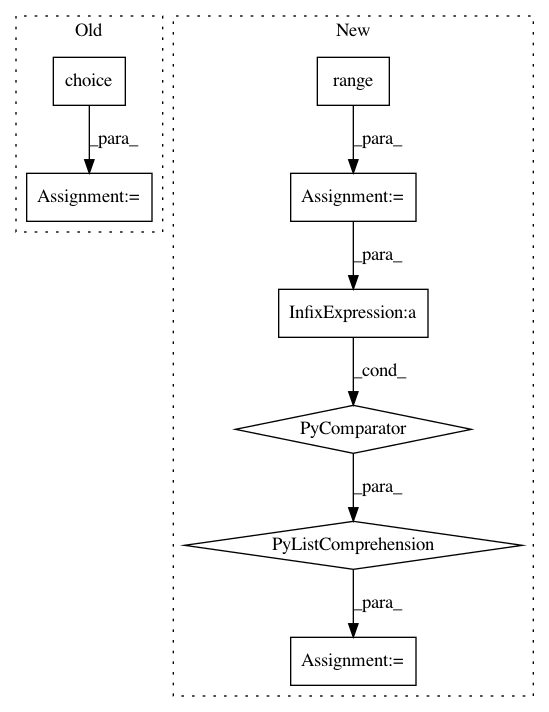

ab58ffb31a31fe93823c2792fa2c0cc779a0ec40,python/examples/hypertools_demo-PPCA.py,,,#,6
Before Change
data1 = np.cumsum(np.random.multivariate_normal(np.zeros(10), K, 250), axis=0)
data2 = copy(data1)
sample_inds = np.random.choice(data2.shape[0], data2.shape[0]*.1)
for sample in sample_inds:
data2[sample,:]=np.nan
print(data2[sample,0])
After Change
data2 = copy(data1)
missing = .1
inds = [(i,j) for i in range(data2.shape[0]) for j in range(data2.shape[1])]
missing_data = [inds[i] for i in np.random.choice(len(inds), len(inds)*missing)]
for i,j in missing_data:
data2[i,j]=np.nan
hyp.plot([data1,data2],linestyle=["-",":"])
In pattern: SUPERPATTERN
Frequency: 3
Non-data size: 8
Instances
Project Name: ContextLab/hypertools
Commit Name: ab58ffb31a31fe93823c2792fa2c0cc779a0ec40
Time: 2016-12-19
Author: andrew.heusser@gmail.com
File Name: python/examples/hypertools_demo-PPCA.py
Class Name:
Method Name:
Project Name: analysiscenter/batchflow
Commit Name: d490edce8fc483707c58e852286950ace7e8cb59
Time: 2020-07-08
Author: 7520522+a-arefina@users.noreply.github.com
File Name: batchflow/utils.py
Class Name:
Method Name: show_research
Project Name: ContextLab/hypertools
Commit Name: 65106299a6514d849453339381d4cec2aa741268
Time: 2016-12-19
Author: andrew.heusser@gmail.com
File Name: python/examples/hypertools_demo-PPCA.py
Class Name:
Method Name: